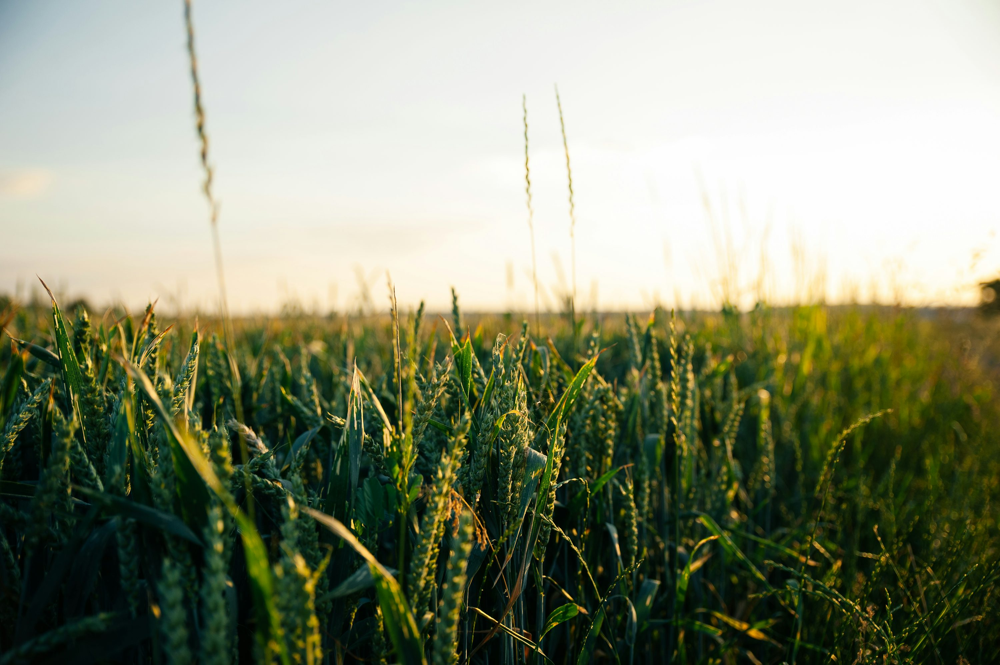

Galeria


Festejando a conexão entre o campo e a cidade
O campo é a nossa raiz! É de lá que vem a comida fresquinha que nutre a cidade, a força para a economia do nosso paÃs e a beleza da natureza que nos cerca . Valorizar o campo é garantir que o alimento chegue à nossa mesa, que haja emprego e que o meio ambiente seja protegido para todos. Campo e cidade: uma conexão que alimenta a vida!
A comida que chega na nossa mesa faz uma superviagem! Tudo começa no campo, onde é plantada ou criada. Depois, segue para o processamento (limpeza, corte, embalagem) e para o armazenamento. De lá, pegam a estrada em caminhões até o supermercado ou feira. E, finalmente, chegam à nossa casa! É um trabalho em equipe para garantir que o alimento esteja sempre fresquinho e seguro. Campo e cidade: juntos nessa jornada que alimenta a vida!